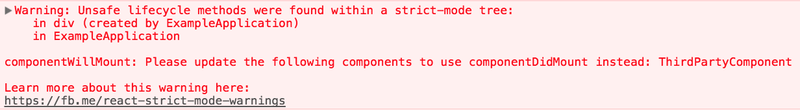

StrictMode is a tool for highlighting potential problems in an application. Like Fragment, StrictMode does not render any visible UI. It activates additional checks and warnings for its descendants.
Note:
Strict mode checks are run in development mode only; they do not impact the production build.
You can enable strict mode for any part of your application. For example: embed:strict-mode/enabling-strict-mode.js
In the above example, strict mode checks will not be run against the Header and Footer components. However, ComponentOne and ComponentTwo, as well as all of their descendants, will have the checks.
StrictMode currently helps with: * Identifying components with unsafe lifecycles * Warning about legacy string ref API usage * Warning about deprecated findDOMNode usage * Detecting unexpected side effects * Detecting legacy context API
Additional functionality will be added with future releases of React.
As explained in this blog post, certain legacy lifecycle methods are unsafe for use in async React applications. However, if your application uses third party libraries, it can be difficult to ensure that these lifecycles aren’t being used. Fortunately, strict mode can help with this!
When strict mode is enabled, React compiles a list of all class components using the unsafe lifecycles, and logs a warning message with information about these components, like so:

Addressing the issues identified by strict mode now will make it easier for you to take advantage of concurrent rendering in future releases of React.
Previously, React provided two ways for managing refs: the legacy string ref API and the callback API. Although the string ref API was the more convenient of the two, it had several downsides and so our official recommendation was to use the callback form instead.
React 16.3 added a third option that offers the convenience of a string ref without any of the downsides: embed:16-3-release-blog-post/create-ref-example.js
Since object refs were largely added as a replacement for string refs, strict mode now warns about usage of string refs.
Note:
Callback refs will continue to be supported in addition to the new
createRefAPI.You don’t need to replace callback refs in your components. They are slightly more flexible, so they will remain as an advanced feature.
Learn more about the new createRef API here.
React used to support findDOMNode to search the tree for a DOM node given a class instance. Normally you don’t need this because you can attach a ref directly to a DOM node.
findDOMNode can also be used on class components but this was breaking abstraction levels by allowing a parent to demand that certain children was rendered. It creates a refactoring hazard where you can’t change the implementation details of a component because a parent might be reaching into its DOM node. findDOMNode only returns the first child, but with the use of Fragments, it is possible for a component to render multiple DOM nodes. findDOMNode is a one time read API. It only gave you an answer when you asked for it. If a child component renders a different node, there is no way to handle this change. Therefore findDOMNode only worked if components always return a single DOM node that never changes.
You can instead make this explicit by passing a ref to your custom component and pass that along to the DOM using ref forwarding.
You can also add a wrapper DOM node in your component and attach a ref directly to it.
class MyComponent extends React.Component {
constructor(props) {
super(props);
this.wrapper = React.createRef();
}
render() {
return <div ref={this.wrapper}>{this.props.children}</div>;
}
}Note:
In CSS, the
display: contentsattribute can be used if you don’t want the node to be part of the layout.
Conceptually, React does work in two phases: * The render phase determines what changes need to be made to e.g. the DOM. During this phase, React calls render and then compares the result to the previous render. * The commit phase is when React applies any changes. (In the case of React DOM, this is when React inserts, updates, and removes DOM nodes.) React also calls lifecycles like componentDidMount and componentDidUpdate during this phase.
The commit phase is usually very fast, but rendering can be slow. For this reason, the upcoming concurrent mode (which is not enabled by default yet) breaks the rendering work into pieces, pausing and resuming the work to avoid blocking the browser. This means that React may invoke render phase lifecycles more than once before committing, or it may invoke them without committing at all (because of an error or a higher priority interruption).
Render phase lifecycles include the following class component methods: * constructor * componentWillMount (or UNSAFE_componentWillMount) * componentWillReceiveProps (or UNSAFE_componentWillReceiveProps) * componentWillUpdate (or UNSAFE_componentWillUpdate) * getDerivedStateFromProps * shouldComponentUpdate * render * setState updater functions (the first argument)
Because the above methods might be called more than once, it’s important that they do not contain side-effects. Ignoring this rule can lead to a variety of problems, including memory leaks and invalid application state. Unfortunately, it can be difficult to detect these problems as they can often be non-deterministic.
Strict mode can’t automatically detect side effects for you, but it can help you spot them by making them a little more deterministic. This is done by intentionally double-invoking the following functions:
constructor, render, and shouldComponentUpdate methodsgetDerivedStateFromProps methodsetState)useState, useMemo, or useReducerNote:
This only applies to development mode. Lifecycles will not be double-invoked in production mode.
For example, consider the following code: embed:strict-mode/side-effects-in-constructor.js
At first glance, this code might not seem problematic. But if SharedApplicationState.recordEvent is not idempotent, then instantiating this component multiple times could lead to invalid application state. This sort of subtle bug might not manifest during development, or it might do so inconsistently and so be overlooked.
By intentionally double-invoking methods like the component constructor, strict mode makes patterns like this easier to spot.
Note:
Starting with React 17, React automatically modifies the console methods like
console.log()to silence the logs in the second call to lifecycle functions. However, it may cause undesired behavior in certain cases where a workaround can be used.
The legacy context API is error-prone, and will be removed in a future major version. It still works for all 16.x releases but will show this warning message in strict mode:
Read the new context API documentation to help migrate to the new version.